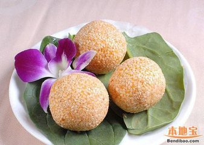

文化中国--端午
端午节
为每年农历五月初五。据《荆楚岁时记》记载，因仲夏登高，顺阳在上，五月是仲夏，它的第一个午日正是登高顺阳好天气之日，故五月初五亦称为“端阳节”。此外端南一带）崇拜龙图腾的部族举行图腾祭祀的节日，百越之地春秋之前有在农历五月初五以龙舟竞渡形式举行部落图腾祭祀的习俗。后因战国时期的楚国（今湖北）诗人屈原在该日抱石跳汨罗江自尽，统治者为树立忠君爱国标签将端午作为纪念屈原的节日；部分地区也有纪念伍子胥、曹娥等说法。 端午节与春节、清明节、中秋节并称为中国汉族的四大传统节日。 自古以来端午节便有划龙舟及食粽等节日活动。自2008年起，端午节被列为国家法定节假日。端午习俗
端午节和中秋节、清明节、春节并成为中国四大传统节日，“棕子香，香厨房。艾叶香，香满堂。桃枝插在大门上，出门一望麦儿黄。这儿端阳，那儿端阳，处处都端阳。”自古以来，我国民间便有端午节吃粽子和划龙舟的习惯，但我们今天不谈这两个习俗，小编带你一路从南走到北，去看看各地那些鲜为人知的端午习俗海南：端午，也是清明之后，海南人一家团聚的日子。据说，只要能够回家，岛上的人们都会在这一天回祖宅。祭祖、向父母请安、与兄弟姐妹戏耍。还有项海岛百姓都熟知的端午内容，就是洗龙水和洗草药澡。滂海的澄迈县，为纪念这一特色民化县端午节，正午会烧符水，洗手眼，然后泼洒于道，称为“送灾难”。新兴县端午，人家各从其邻近庙宇鼓吹迎导神像出巡。巫师并以法水、贴符驱逐邪凡魅。 石城县端午，儿童放风筝，称为“放殃”。
福建：福州端午旧俗，一般临近端午的5天内都要吃指定的食物，初一吃糕，初二吃桃，初三吃田螺、海螺，初四门前挂艾草，初五吃鸡蛋，以求来年平安。
美食中国--端午
粽子
1、将糯米、红豆、绿豆及花生分别洗净放在冷水中泡2小时，眉豆洗净在冷水中泡1小时; 2、沥干水分，拌匀糯米、红豆、绿豆、花生、眉豆及玉米，加糖调味; 3、粽叶洗干净，在热水中泡2小时后，擦干。 4、取出2片粽叶，交叉叠起折成三角顶部，加入适量糯米混合物，将头尾折好。两边再包裹上另2片粽叶，折好后用细绳包扎，即成五豆粽。 5、上笼蒸20分钟即可食用。

大馍
1、板栗、香菇、五花猪肉、咸蛋黄、虾、白糯米、肉酱、花生的加工方法和古味肉粽相同。紫米要泡在热水里，时间需要6个小时左右。泡好以后，将紫米用文火小炒，炒出香味，但是不要炒得太软。瑶柱和银杏也需要事先煮熟了。鲍鱼最好用干鲍鱼，提前7天就要放在水里泡。 2、将6成的白糯米和4成的紫米拌在一起，加上其他的原料，用台湾竹叶包裹成4个角，放入水里煮一个半小时。
- 
白球
1.将粽叶400克洗净，放入锅中加入清水煮软，捞起沥水，备用。 2.将糯米淘洗干净，沥水，备用。 3.将蜜枣装入碗内，蒸软取出，趁热去核，葡萄干洗净，沥水。 4.取3张粽叶，毛面相对，先放入1/3糯米，加入蜜枣和少许葡萄干，再放入2/3糯米包成三角形粽子，用绳子扎紧。
五黄鱼
1、将鸡肉、薯仔和大葱头剁碎，加入盐、蒜、鸡精、生粉等调料拌匀。 2、洗净糯米，浸水半小时。烧热锅，用葱姜蒜爆香，加入糯米和生抽，炒均。 3、用粽叶2张，折叠成漏状，放入炒香的糯米1汤匙，加入做法1中扮匀的馅料，再加入1汤匙的糯米在上面。
屈子情怀--端午
屈原先贤
（约公元前340或339年～公元前278年），战国时代楚国诗人、政治家，出生地楚国丹阳，湖北省宜昌市，芈姓。楚武王熊通之子屈瑕的后代。少年时受过良好的教育，博闻强志，志向远大。
离骚
帝高阳之苗裔兮，朕皇考曰伯庸。摄提贞于孟陬兮，惟庚寅吾以降。皇览揆余初度兮，肇锡余以嘉名：名余曰正则兮，字余曰灵均。纷吾既有此内美兮，又重之以修能。扈江离与辟芷兮，纫秋兰以为佩。朝搴阰之木兰兮，夕揽洲之宿莽。惟草木之零落兮，恐美人之迟暮。(惟 通：唯)不抚壮而弃秽兮，何不改乎此度?乘骐骥以驰骋兮，来吾道夫先路！昔三后之纯粹兮，固众芳之所在。杂申椒与菌桂兮，岂惟纫夫蕙茝！彼尧、舜之耿介兮，既遵道而得路。何桀纣之猖披兮，夫惟捷径以窘步。惟夫党人之偷乐兮，路幽昧以险隘。岂余身之殚殃兮，恐皇舆之败绩！忽奔走以先后兮，及前王之踵武。荃不查余之中情兮，反信谗而齌怒。余固知謇謇之为患兮，忍而不能舍也。指九天以为正兮，夫惟灵修之故也。曰黄昏以为期兮，羌中道而改路！初既与余成言兮，后悔遁而有他。
（约公元前340或339年～公元前278年），战国时代楚国诗人、政治家，出生地楚国丹阳，湖北省宜昌市，芈姓。楚武王熊通之子屈瑕的后代。少年时受过良好的教育，博闻强志，志向远大。
离骚
帝高阳之苗裔兮，朕皇考曰伯庸。摄提贞于孟陬兮，惟庚寅吾以降。皇览揆余初度兮，肇锡余以嘉名：名余曰正则兮，字余曰灵均。纷吾既有此内美兮，又重之以修能。扈江离与辟芷兮，纫秋兰以为佩。朝搴阰之木兰兮，夕揽洲之宿莽。惟草木之零落兮，恐美人之迟暮。(惟 通：唯)不抚壮而弃秽兮，何不改乎此度?乘骐骥以驰骋兮，来吾道夫先路！昔三后之纯粹兮，固众芳之所在。杂申椒与菌桂兮，岂惟纫夫蕙茝！彼尧、舜之耿介兮，既遵道而得路。何桀纣之猖披兮，夫惟捷径以窘步。惟夫党人之偷乐兮，路幽昧以险隘。岂余身之殚殃兮，恐皇舆之败绩！忽奔走以先后兮，及前王之踵武。荃不查余之中情兮，反信谗而齌怒。余固知謇謇之为患兮，忍而不能舍也。指九天以为正兮，夫惟灵修之故也。曰黄昏以为期兮，羌中道而改路！初既与余成言兮，后悔遁而有他。